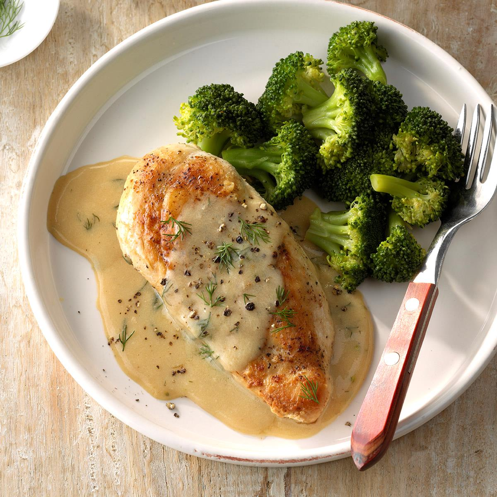

Chicken and Broccoli Recipe

Description
Chicken breast and broccoli is a classic dish for dieting. The recipe is simple and flexible, with the main variations being the seasoning used on the chicken breast and any sauces or condiments added to the dish after completion.
To avoid a dry chicken breast and consequentially a far less flavorful dish, take care not to overcook the chicken. Recommended seasonings include salt, pepper, and garlic powder, and recommended condiments include kewpie mayo, sriracha hot sauce, and tabasco.
Ingredients
- 300 grams chicken breast
- 100 grams broccoli
- olive or vegetable oil
- seasonings to taste
Steps
- In a small pot, boil enough water to submerge all of the broccoli.
- While the water is boiling, wash the broccoli and season the chicken breast generously on one side with your chosen seasonings.
- Optionally, for simpler cooking, dice the chicken breast into cubes about 1 in by 1 in.
- Pour a small amount of oil into a medium pan and wait for it to heat.
- Place the seasoned chicken breast into the pan, flipping or turning occasionally.
- Once the water is boiling, boil or steam the broccoli for 5 minutes.
- Check the chicken breast for doneness. Once both main ingredients are finished, take off the heat and serve with your chosen condiments.